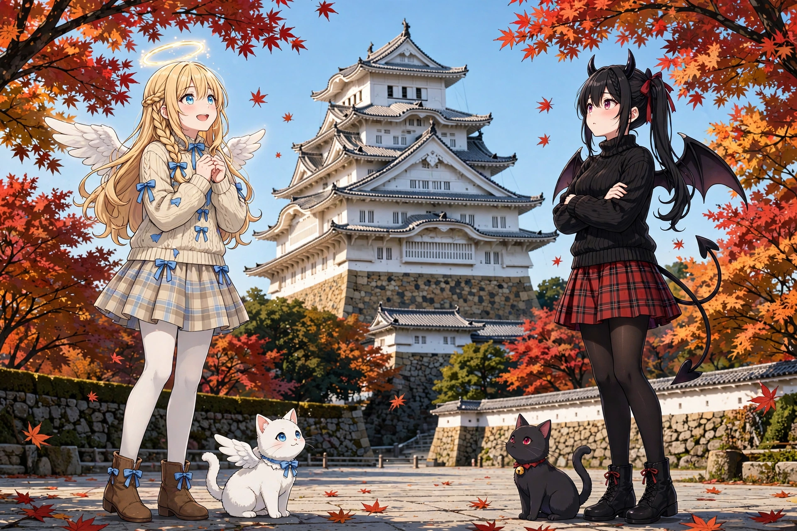
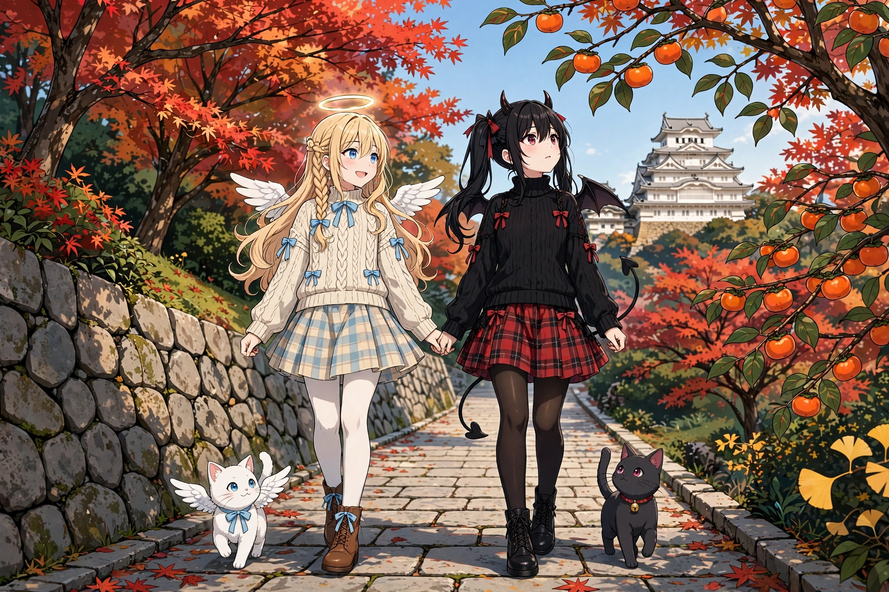
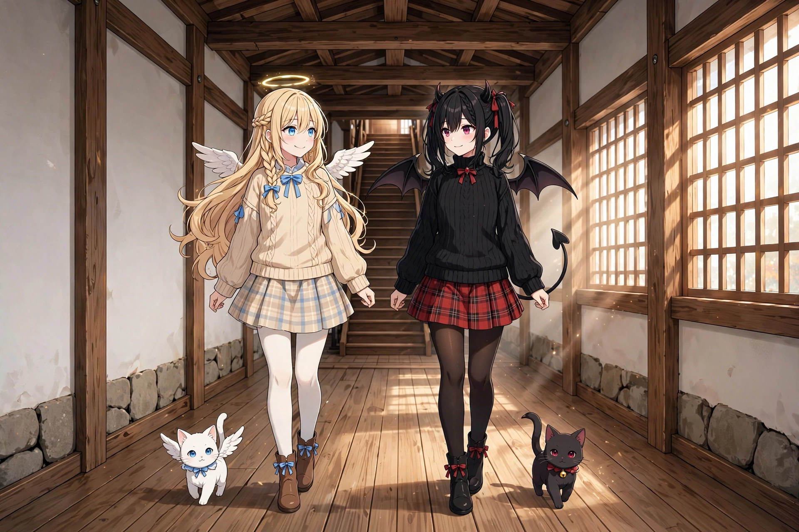
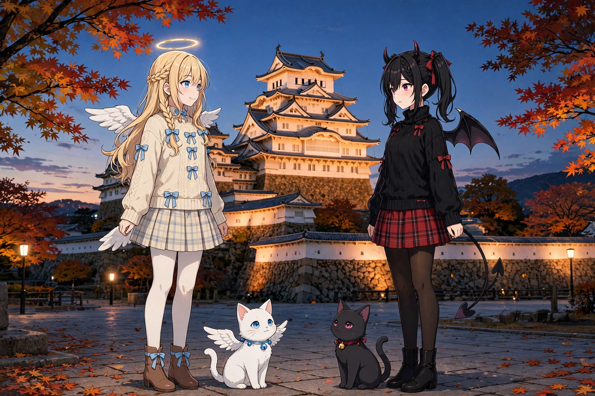

読み切り短編『白鷺と紅葉の姫路城』を公開しました
2026年11月25日
読み切り短編『白鷺と紅葉の姫路城』を公開しました。世界遺産・姫路城へ出かけたセラフィナとルチアの、白鷺城の一日のお話です。
1. 白鷺、現る

三の丸広場に立った瞬間、二人とも黙りました。
真っ白な大天守が、青空にすっと立っていました。白漆喰の壁が光を受けて、羽を広げた白鷺みたいに輝いています。周りの紅葉の赤が、その白さをいっそう際立たせていました。
「……大きい。そして、白い」
「ふ、ふん。悪魔の城は黒くて立派よ。白いのは、まあ、その、目立つけど」
ルチアは腕組みをして見上げていますが、首がどんどん上を向いていきます。モコは白さに圧倒されたのか、わたしの足にくっついて離れません。ノワールは逆に、黒い自分が目立つ場所だとでも言うように、胸を張って座っていました。
世界遺産で、国宝。地上の人たちが四百年守ってきたお城です。
「行きましょう、ルチア。今日はあの白鷺の中に入るんです」
2. 紅葉の坂道

お城の中は、坂と石垣の迷路でした。
敵を簡単に近づけないための工夫だそうです。ぐるぐると回る坂道を、紅葉に見守られながら登っていきます。途中、柿の木が橙色の実をたくさんつけていて、ルチアがじっと見上げていました。
「……食べていいのかしら、あれ」
「だめですよ、お城の柿です。見るだけです」
「べ、別に食べたくなんてないわよ！ 色が綺麗だなって思っただけ」
門をくぐるたび、景色が少しずつ変わります。さっきまで大きく見えた天守が、木の間からちらりと見えたり、石垣の向こうに隠れたり。攻めてくる人を惑わせる仕掛けは、見学の人間をわくわくさせる仕掛けでもありました。
3. 天守の中は

天守の中の階段は、梯子みたいに急でした。
「な、なんでこんなに急なのよ……！」
「戦のときのためですよ。……ルチア、翼は使わないでくださいね」
「使ってないわよ！ 意地でも登ってやるわ」
白い壁と太い木の柱、格子窓から差す光。何百年も前の人たちが、同じ床を踏んで、同じ窓から外を眺めていたのだと思うと、不思議な気持ちになります。
最上階まで登ると、姫路の街が一望できました。遠くの山々まで見渡せる、気持ちのいい眺めです。
「……悪くない眺めね。この城、気に入ったわ」
ルチアの「気に入った」は、最大級の褒め言葉です。
4. 夕方の白鷺

帰る頃には、空が藍色に変わっていました。
そして広場に戻ったとき、お城に明かりが灯りました。秋と冬の姫路城は、暖かいオレンジ色の光で照らされるのだそうです。白かった天守が、夕方だけの色に染まっていきます。
「朝の白鷺と、夕方の白鷺は、別のお城みたいですね」
「……人間って、こういうの考えるのよね。照らして、魅せて。まったく、罪な生き物だわ」
褒めています。間違いなく褒めています。
紅葉と、白いお城と、暖かい光。地上の欲張りな景色を、今日もまたひとつ受け取りました。
今日もおつかれさまです。
（了）